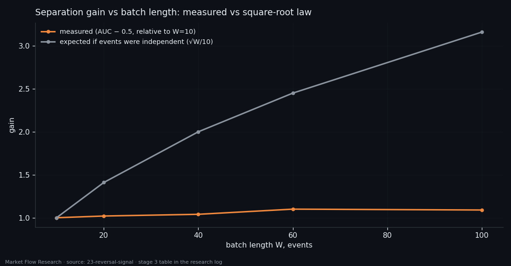
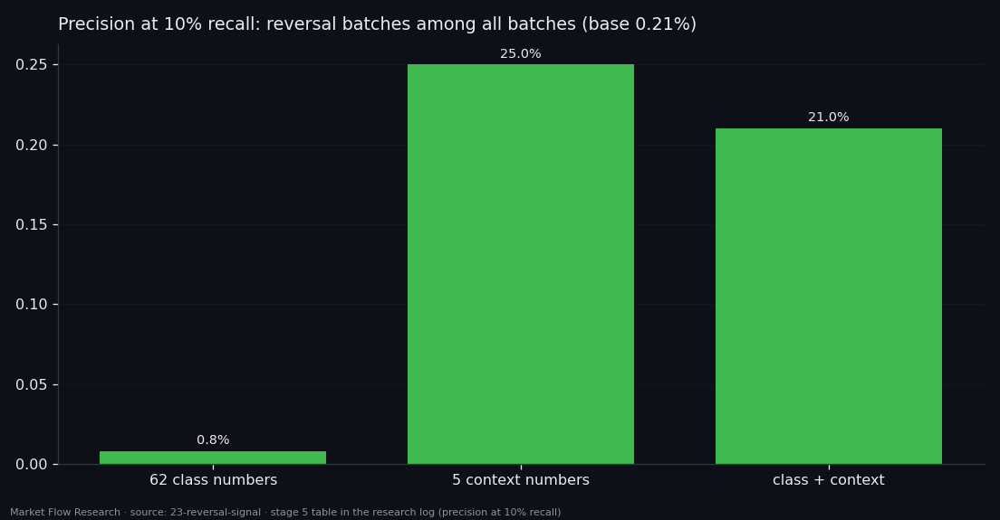
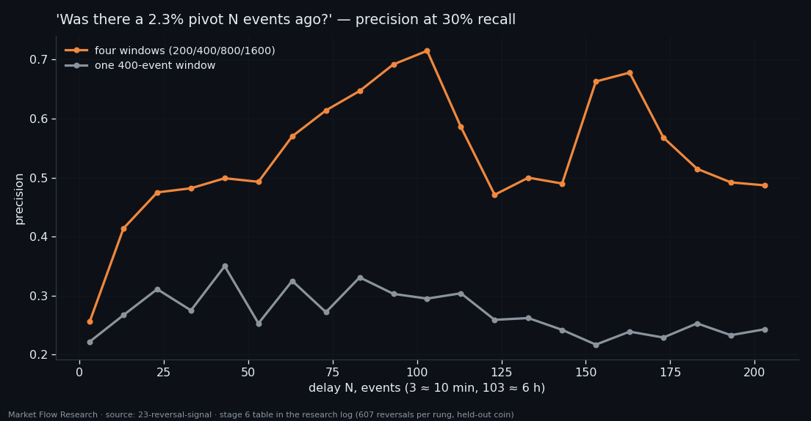

A Reversal Is a Place in the Move, Not a Shape in the Book — Five Causal Numbers Beat 62
The edge of a leg really is different from its middle — in 85% of 600 legs, by a factor of about 3.8, with a coin-flip control at 0.51. Yet no single 10-event batch can be picked out of the whole dataset by its book numbers. Five tests later the reason is clear: what identifies a reversal is where you are in the move, not what the book looks like. Five causal numbers about recent extremes lift the hit rate 121-fold over the base; the 62 numbers of the class manage 3.8-fold and add nothing on top. Asked again every ten events with four look-back windows, "was that a pivot?" climbs from 26% after ten minutes to 71% after six hours.
① The difference is real — inside each leg
Study 21 showed that on average over hundreds of legs the edge of a leg looks different from its middle. Study 22 showed that a single 10-event batch has no signature of its own. Both are true at once, and this study tries five ways to get the average difference out of the noise.
A local rank instead of a pooled baseline — normalising each batch against its own neighbourhood to remove volatility regimes — did nothing: AUC 0.755 on a 1,000-event window against 0.744 pooled, and lower precision. Volatility is not why separation is weak.
A pair inside one leg is where the effect shows plainly. Compare the five events at each end of a leg with the middle of that same leg: flow ratios are stronger at the edge in 85.3% of 600 legs (median ×3.77), price moves in 83%, and book-per-flow ratios are weaker in 81–83%. The same method on random places gives 0.487–0.510. The end of a leg is slightly more distinct than its start here (0.78 vs 0.74), and edge width barely matters: 3 to 20 events all give 0.84–0.85.
The pooled test asks "is this batch strong at all?" — and the dataset is full of strong batches. The in-leg test asks "is it stronger than the middle of its own leg?" Only the second matches what the leg profile shows.

② Longer batches help — four times slower than they should
Averaging more events should shrink noise. It does, a little: the best AUC rises from 0.744 at 10 events to 0.767 at 60 (2.3–3.5 hours), and precision at 10% recall from ×4.3 to ×10.3 the base rate. But the gain is 1.10 where independent noise would give 2.45: neighbouring events are correlated, so each extra event brings less new information. Past 60 events it stops — a 100-event batch covers half a leg and mixes the edge with the middle.

③ Where you are beats what you see: ×121 vs ×3.8
The fourth and fifth tests stop describing the batch and describe the move instead, causally — only from what is known at that moment. Rolling extremes of the smoothed price over the last 400 events give: how far the move has run up from the low and down from the high (in units of the 2.3% threshold), and how many events since each extreme.
How far the move has gone matters little (a run past the threshold doubles the base rate, ×1.65). When the last extreme happened matters enormously: batches where the rolling low was 3–5 events ago hold 180 of 2,509 reversals — a base rate of 7.2%, ×34.9 the average. Part of this is geometry: the labelled batch ends three events after the pivot, and the pivot is an extreme of the smoothed price. That is exactly the point — the context finds candidates; 93% of them never become a 2.3% reversal, because confirmation lies in the future.
Given to gradient boosting, the five context numbers score AUC 0.982 and ×121 the base rate: at 20–30% recall, one in four flagged batches is a reversal, at about one signal per coin per day. The 62 class numbers: ×3.8, with dozens of false signals a day. Class plus context is worse than context alone (×102): 62 weak inputs on 437 positives are noise for the trees. A cheat run with the true "events since pivot" reaches 0.9999 — the task is solvable once you are given the answer, and the gap between 0.971 and 0.9999 is exactly what cannot be known causally.

④ Ask again: 26% at ten minutes, 71% at six hours
The last test turns the detector into a procedure. Instead of asking once, ask at every rung of a ladder: was there a pivot exactly N events ago?, for N from 3 to 203, with a held-out coin for scoring.
With a single 400-event window the answer never improves: 22–35% at any delay. The reason is leg length — a 2.3% pivot is the extreme of the whole leg, median 423 events, and within 400 events "price fell 2.3% from the high" happens many times inside one long leg; only the first was the pivot. Four windows (200, 400, 800, 1,600 events) tell the leg's extreme from a local one, and then waiting works: 26% after ten minutes, 47% after 80, 57% after three and a half hours, 71.5% after six. Beyond about 100 events the numbers wander between 47% and 68% — sampling noise at 30% recall. Adding the class numbers again changes nothing.
So the working scheme is: flag a candidate at once, then re-ask every ten events and let the confidence grow. It is a confirmation machine — it tells you a turn has happened, with increasing certainty, not that one is coming. That distinction, and the gap between the in-leg difference and single-batch detection, set the questions of the next studies.

Reproduce this study
- Research log (.md, Ukrainian): goal, data, plan, scripts, every confirmed stage and table — enough to rerun the study
- Reproduction kit (.zip): the study's scripts, project rules and base scripts that build every class
If this changed how you read the tape, the natural next step is Volume Is the Fuel — Not the Steering Wheel — We recorded the Binance order book every second for six coins over five months and ran eighteen tests on what volume really does.
Volume Is the Fuel — Not the Steering Wheel
We recorded the Binance order book every second for six coins over five months and ran eighteen tests on what volume really does.
About Market Research Lab — What We Collect and Why
Most market commentary is storytelling.
From Calm to Calm: a Standard for What Counts as a Signal (BTC)
We stopped defining market signals with a stopwatch.
The Wall That Goes Quiet: What Resting Liquidity Predicts
We measured resting limit liquidity sitting on both sides of the book second by second across six coins, and asked the only question that matters:….
Comments
Discussion is powered by GitHub. Enable it by adding secrets/giscus.json (repo IDs from giscus.app).